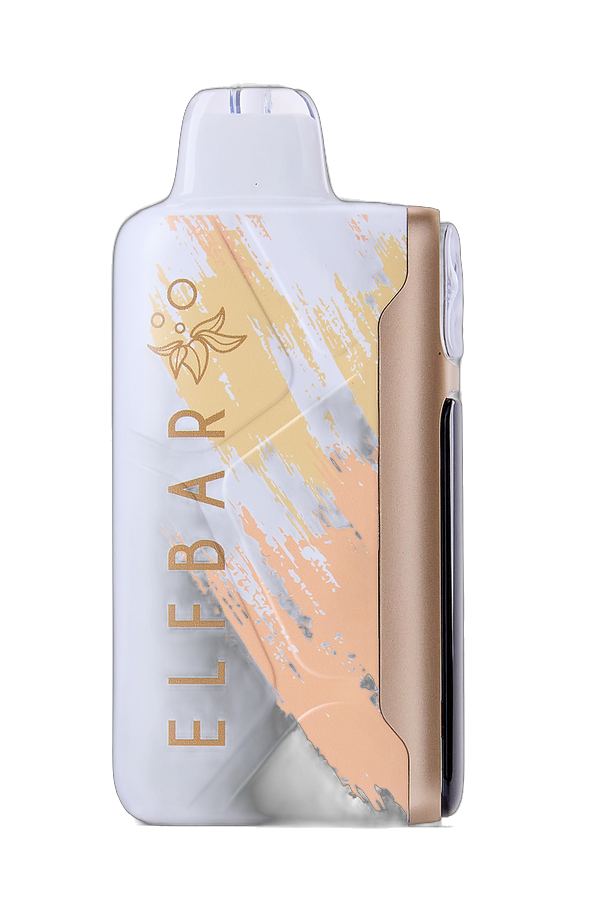

Main Model / 0mg Package
Ice King
Jasmine Green Tea
0mg NicotineJasmine Green Tea最大25,000回
Jasmine Green Tea（ジャスミングリーンティー）は、現在Amazonで購入できるフレーバーです。ニコチン0mg・タール0mg。吸引回数は最大25,000回（目安）、リキッド20ml、バッテリー850mAhです。ほかのフレーバーの購入案内はありません。
冷感は5段階です。充電接口はUSB Type-Cです。
| モデル | Ice King Jasmine Green Tea（ジャスミングリーンティー） |
|---|---|
| ニコチン | 0mg |
| タール | 0mg |
| 吸引回数 | 最大25,000回（目安） |
| リキッド | 20ml |
| バッテリー | 850mAh（充電式・USB Type-C） |
| 冷感 | 5段階 |
| コイル | Triple Mesh Coil |
| 購入 | Amazonのみ（ASIN B0HGLTCMB6）。参考価格5,200円（税込）はAmazonの表示に準じます |
日本向け0mgモデルとして、外箱にも「0mg Nicotine」表記があります。